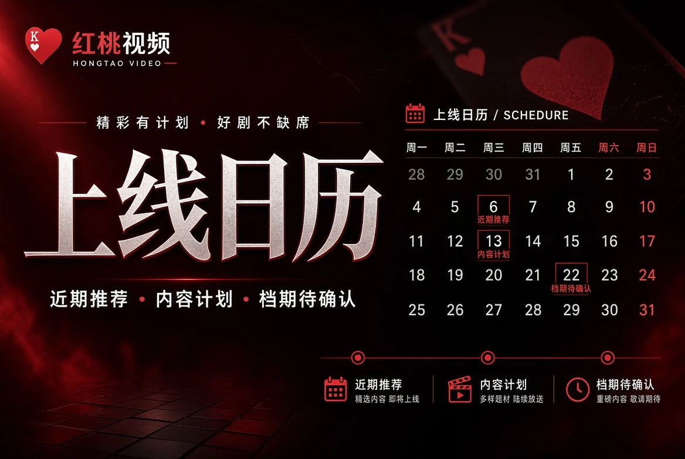

人物笺
人物内容围绕公开活动、舞台与镜头表现展开，没有可靠来源时不补写年龄、家庭、感情关系或争议，让观察保持克制。
继续阅读先看当天值得继续追踪的公开内容与编辑线索。
人物笺只在可靠公开资料范围内观察舞台与镜头表达。
银幕栏从题材和表达切入电影、纪录与城市故事。
短片匣整理城市、人物、旅行和生活观察等短片方向。
TODAY
今日脉搏不依赖播放量、点赞量或实时排名来制造紧迫感，而是从公开来源、题材线索和阅读顺序出发，把值得继续看的内容连接到人物、银幕、短片和主题页面。这样既保留当天的节奏，也让每条信息都能回到可核对的来源与站内入口。
THREE WINDOWS
SERIAL
关注空间、节奏与人物之间的关系变化，不复制完整剧情。
从沟通、选择与代际差异理解故事，不补写未确认情节。
观察成长阶段里的选择与变化，保持题材说明的克制。
在轻松节奏里寻找人物互动和生活细节，避免夸张剧透。
MOTIF
FOLIO
EDITORIAL METER
人物观察
银幕主题
短片精选
片册推荐
编辑专栏
AGENDA
已经完成基础资料核对与栏目整理，可直接进入对应页面阅读。
内容仍在整理与编辑过程中，不用倒计时制造紧迫感。
发布时间或资料状态尚未确认，后续以实际公开信息为准。
APP
FAQ
红桃视频围绕娱乐资讯、人物公开动态、银幕导览、短片、连载、幕后手记与片册进行整理。内容以合法公开来源为基础，不提供盗版播放、破解资源、网盘下载或镜像入口。
人物笺只整理可靠公开资料，重点放在公开活动、舞台和镜头表现。年龄、家庭、感情关系、争议等未经确认的私人内容不会被补写成事实，也不会用未经授权图片冒充真实资料。
热度表使用编号表达编辑关注顺序，不代表播放量、点赞量、排名涨跌或实时热度。页面把入选理由写清楚，避免用无法核实的数据制造“热门”效果，让读者把注意力放回题材和表达。
APP和安装说明只介绍移动浏览、权限理解与一般准备事项，不提供真实下载地址、镜像包或破解版本，也不会要求绕过系统安全限制。遇到来源不明的安装方式，应停止操作并重新核对。
公开可见的作品、剧照和文字仍然受到版权与授权范围约束。红桃视频不会把公开资料理解成任意复制许可；遇到权属不清的材料，应优先保留、下架或重新确认来源，再决定是否继续使用。
分级说明用于提供适龄、题材和观看提醒，帮助读者与家长提前判断内容是否合适。它不是好坏评分，也不会用夸张标签代替说明；未成年人保护、清楚信息和自主判断始终是重点。
ABOUT
红桃视频希望把娱乐资讯、人物公开动态、银幕内容、短片、连载与幕后手记整理成更稳定的阅读入口。平台不依赖虚假热度、侵权资源或夸张承诺吸引注意，而是通过清晰分类、站内链接和必要说明，让读者知道信息从哪里来、哪些内容仍待确认、哪些只是编辑观点。版权、内容分级与隐私提醒也会和内容入口并列出现，避免它们只藏在页脚。长期来看，红桃视频更重视可持续的整理方式：让每个栏目都有独立用途，让不同主题之间可以自然流动，也让每次点击都回到真实存在的页面。